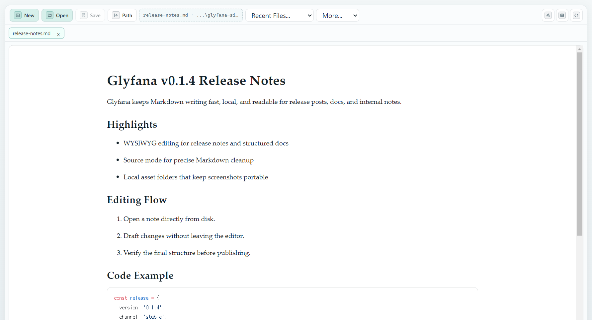

작성 경험
읽기 좋은 Markdown 편집
미리보기 없이도 바로 이해되는 편집 화면
Windows, Mac OS, Linux용 파일 기반 Markdown 에디터
클라우드 없이, 복잡한 설정 없이, 안전하게 작성하세요. 파일은 로컬에 남고, 작업은 가볍게 이어집니다.

작성 흐름
작성 경험
미리보기 없이도 바로 이해되는 편집 화면
소스 모드
Markdown을 정확히 제어해야 할 순간에만 전환
로컬 파일
내 폴더의 파일을 바로 열고 저장합니다
신뢰와 설치
설치 전 최신 변경 사항을 확인하세요.
다운로드 파일의 해시를 운영체제별로 비교하세요.
FAQ
네. GitHub Releases에서 최신 공개 빌드를 받을 수 있습니다.
네. 릴리스 노트와 SHA256 값을 함께 제공합니다.
서명 전 빌드는 OS 보안 안내가 보일 수 있습니다. 위 안내를 확인하세요.